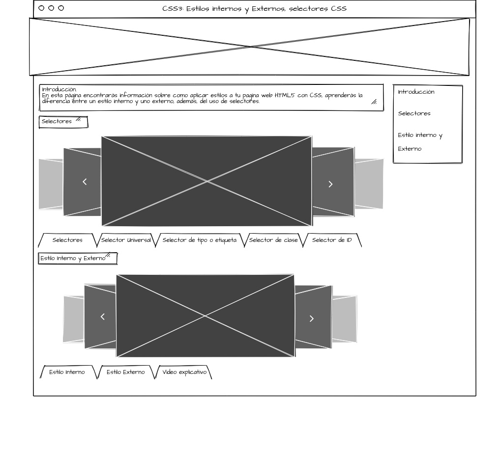

Diseñar un OVI acerca de CSS3: Estilos internos y Externos,Selectores CSS
Objetivos especificos
Comprender el manejo de CSS3 para el diseño grafico de las paginas
Explicar la diferencia entre estilos internos y externos y como manipular su uso
Explicar el uso de selectores para el diseño de las paginas web con CSS
Materiales
Material principal con el cual se explicará los 3 temas
https://www.w3.org/Style/Examples/011/firstcss.es.html#HTML
Imagen de explicacion de selectores guardada en el github
https://github.com/linazon/DSW-LinaGarzon/blob/master/Selectores.JPG
Explicación tipos de selectores
https://uniwebsidad.com/libros/css/capitulo-2/selectores-basicos
Video explicación Estilos internos y Externos
https://www.youtube.com/watch?v=KTa5WUWU1lk&ab_channel=ProfeJavier
Contenido
Introducción
En esta página encontrarás información sobre como aplicar estilos a tu pagina web HTML5
con CSS, aprenderás la diferencia entre un estilo interno y uno externo, además, del uso de
selectores.
Selectores
El selector en forma basica es la selección del elemento al cual se le quiere aplicar el estilo.
Este es una de las partes que componen las reglas que se usan en el CSS:
1. el selector, el cual le dice al navegador la parte del documento que se verá afectada por la regla;
2. la propiedad. la cual especifica qué aspecto del diseño va a cambiarse;
3. el valor, el cual da el valor para la propiedad.
Algunos tipos de selectores:
Selector Universal
Se utiliza para seleccionar todos los elementos de la pagina se indica mediante un asterisco (*).
Selector de tipo o etiqueta
Selecciona todos los elementos de la página cuya etiqueta HTML coincide con el valor del selector.
Selector de clase
Se utiliza un atributo class en el elemento al que se quiera aplicar el estilo, llamando luego el atributo.
Selector de ID
La sintaxis de los selectores de ID es muy parecida a la de los selectores de clase, salvo que se utiliza el símbolo de la almohadilla (#) en vez del punto (.) como prefijo del nombre de la regla CSS
Estilo interno
El estilo interno es el que aplicamos en el mismo código de la pagina web que estamos creando,
se usa el elemento Style dentro de Head, desde aquí es donde generamos las reglas para crear el estilo de nuestra pagina web
Estilo Externo
Para este se crea una hoja de estilo completa y aparte de nuestra hoja de html, en esa hoja de estilo,
ya no es necesario usar el elemento Style, el beneficio de esta hoja de estilo es que si necesitamos aplicar el mismo estilo
a varias paginas web, solo basta con llamar la hoja de estilo
Maquetación

Voy a usar la guia de esta pagina para hacer los sliders